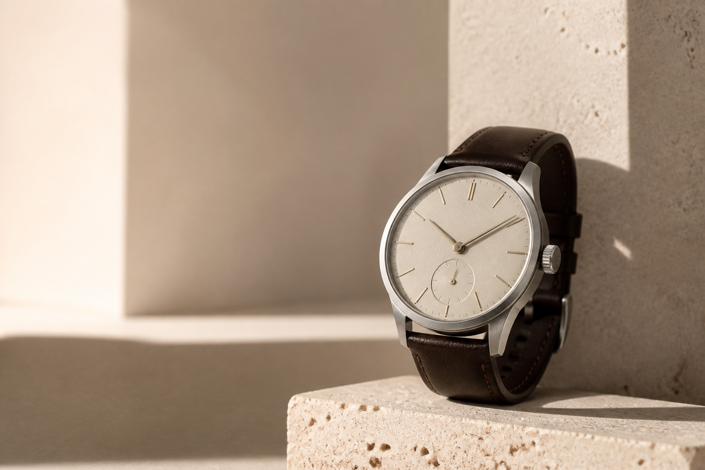
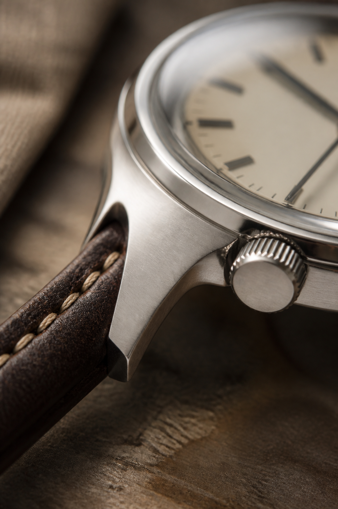
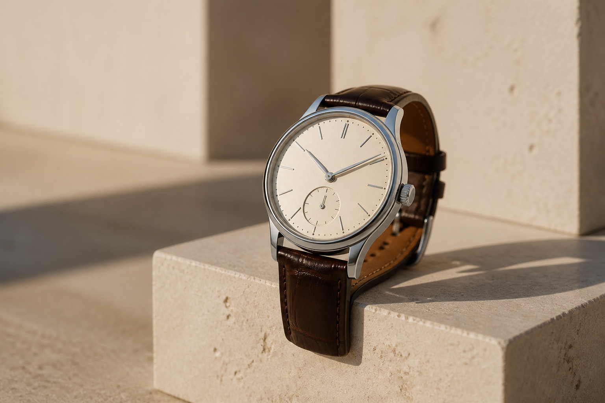

AUREL / Independent watchmaking
Time,
refined.
Mechanical watches designed for those who value what lasts.
01 / 04
The collection / 2026
Designed for every day.
Made for every year.
Four distinct expressions. One considered approach to proportion, material and mechanical time.
Collections
Three ways
to keep time.
From formal restraint to purposeful utility, each collection carries a distinct point of view.

Our approach / Craft
Built to outlast
the moment.
We begin with enduring materials and remove everything that does not serve the watch. Balanced cases. Clear dials. Tactile finishes. Details made to reward a closer look.
- 01
Mechanical at heart
Automatic movements make time visible, physical and enduring.
- 02
Honest materials
Stainless steel, sapphire crystal and full-grain leather age with grace.
- 03
Considered finishing
Brushed and polished surfaces bring subtle depth to every angle.
Signature / No. 01
The essential,
considered.
Our founding design distills a watch to its clearest expression. Slim, balanced and quietly distinctive.
- Case
- 39mm steel
- Movement
- Automatic
- Crystal
- Sapphire
- Water
- 100 metres

AUREL / Philosophy
“Fewer things.
Better made.”
We believe the objects closest to us should earn their place. Not through novelty, but through usefulness, beauty and the character that arrives with time.
AUREL watches are a study in restraint—designed to be worn often, maintained thoughtfully and kept for years.
Owner notes
Time, well spent.
“The proportions are exactly right. It disappears under a cuff, then catches your eye at the right moment.”
“Midnight feels purposeful without asking for attention. I wear it far more than I expected.”
“Simple, legible and beautifully finished. The Field has become part of my everyday uniform.”